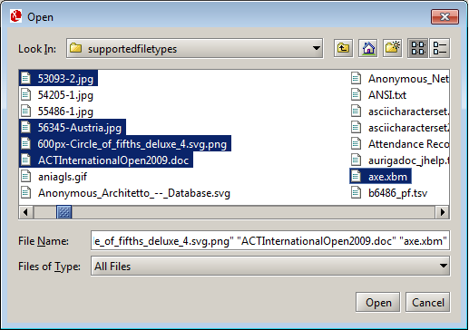
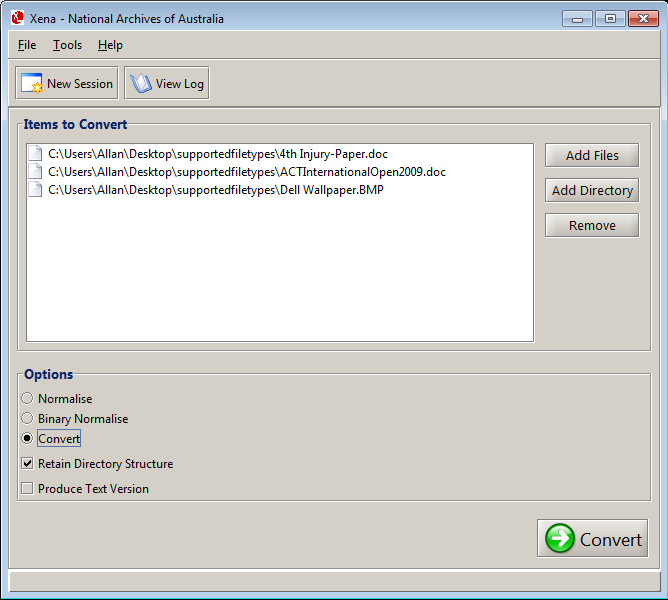
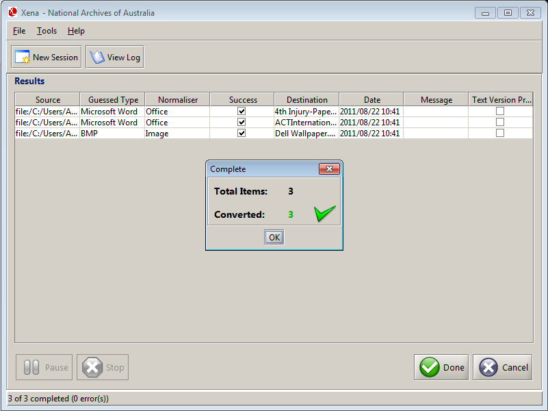

This help topic describes how to convert a single file, or several files across different directories.
Result: The file browser window is displayed.

Result: The file(s) selected are displayed in the Items to Convert section of the main Xena window.

This process can be repeated for as many files as required.
Note: During processing, the Pause and Stop buttons will become available. Clicking either of these buttons will interrupt processing after the current file has been processed. If the current file is large or complex, there may be some delay before either of these buttons come into effect.
Result: Once processing is completed, the results are presented in the Results section.
